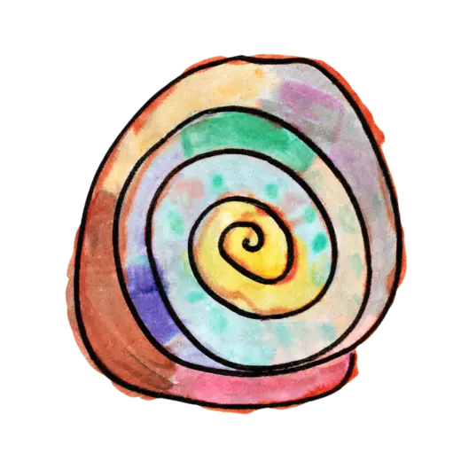
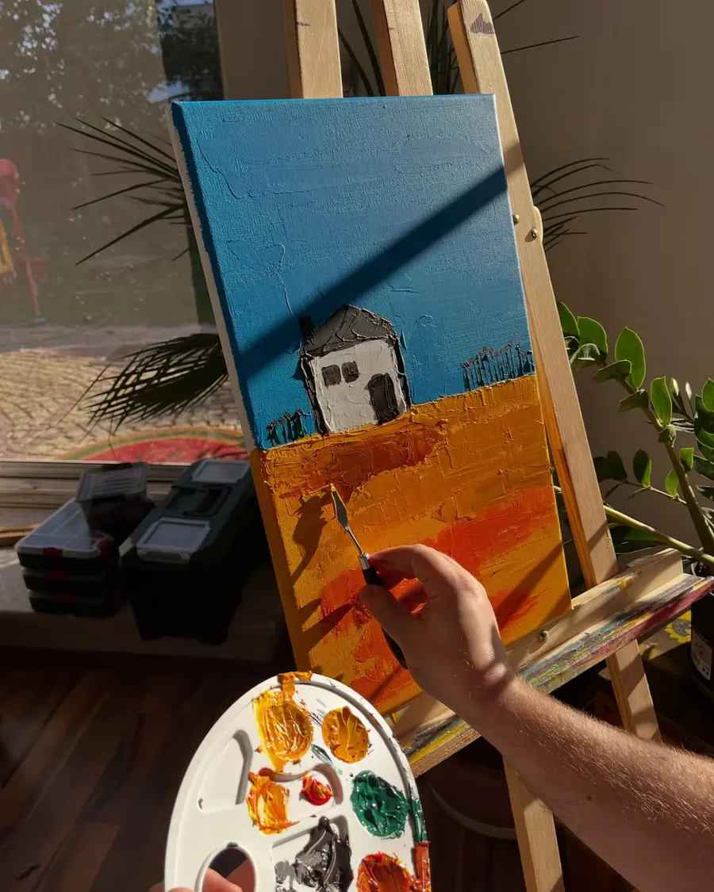
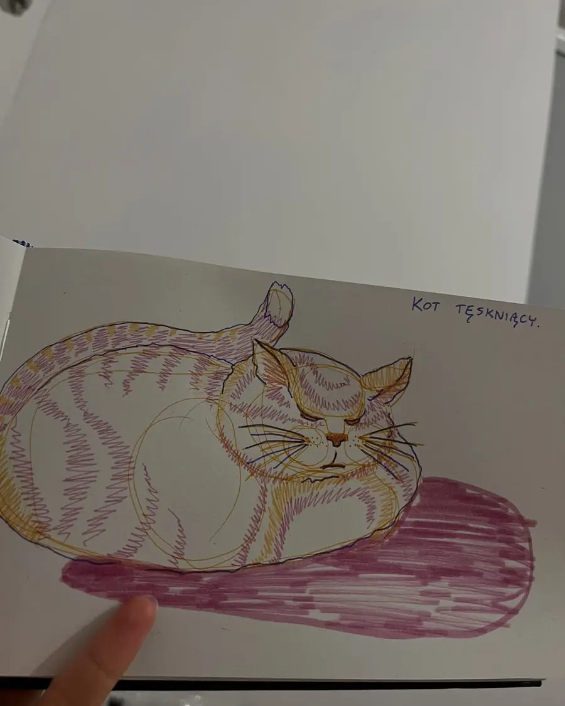
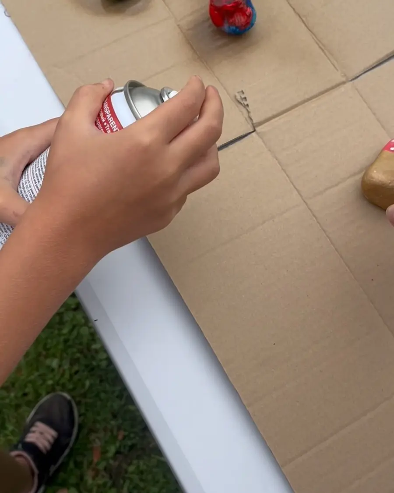

wskorupce.pl
Pracownia Agaty Kośnik. Miejsce twórczej swobody, eksperymentu i radości z działania.

Agata
Kośnik
twórczyni warsztatów,
edukatorka, artystka
Jestem artystką i edukatorką z wykształceniem rzeźbiarskim – ukończyłam specjalność rzeźba na Wydziale Malarstwa i Rzeźby Akademii Sztuk Pięknych we Wrocławiu. W swoim życiu dotknęłam wielu technik artystycznych – zarówno płaskich, jak i przestrzennych. Szczególnie bliski jest mi proces twórczy – moment, w którym z pozornego chaosu zaczyna wyłaniać się coś nowego. Bardzo lubię bawić się tym procesem, nie myśląc o efekcie końcowym. I właśnie tego uczę na moich warsztatach – swobody w działaniu i czerpania z tego radości.
Mam wieloletnie doświadczenie w pracy z dziećmi i dorosłymi w różnym wieku. Twórczość traktuję jako sposób wyrażania siebie i prowadzenia wewnętrznego dialogu. Na moich zajęciach łączę wiedzę artystyczną z praktycznym podejściem, tworząc przestrzeń do autentycznego, radosnego działania.
Jestem trenerką 1. stopnia Sensoplastyka® i nieustannie poszerzam swoje kompetencje, uczestnicząc w szkoleniach i warsztatach z zakresu sztuki, ekspresji oraz pracy z grupą. Rozwój – zarówno mój, jak i uczestników moich zajęć – to dla mnie nieodłączna część procesu twórczego.
Ostatnie kadry


masz pomysł?
Porozmawiajmy.
Odezwij się w wiadomości na Instagramie.
Napisz do wskorupce.pl